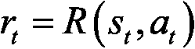

。
。在这一章，你将开始认真学习人工智能理论。你将首先介绍人工智能的一个主要分支，称为强化学习，以及支撑每个强化学习模型的五个原则。这些原则会给你理论上的理解，让你理解本书中每一个即将出现的人工智能模型。
今天当人们提到 AI 时，有人会想到机器学习，有人会想到强化学习。我属于第二类。我一直将机器学习视为统计模型，这些模型有能力学习一些相关性，在没有显式编程的情况下，它们可以据此做出预测。
虽然这在某种程度上是人工智能的一种形式，但机器学习不包括像我们人类一样采取行动并与环境互动的过程。事实上，作为聪明的人，我们一直在做的事情如下:
这种与环境互动的过程是我们试图在人工智能方面重现的。在这种程度上，人工智能在这方面的分支是强化学习。这是最接近我们思维方式的匹配；人工智能的最高级形式，如果我们将 AI 视为试图模仿(或超越)人类智能的科学。
强化学习在 AI 的商业应用中也有最令人印象深刻的成果。例如，阿里巴巴利用强化学习，在不增加广告预算的情况下，将其在线广告的投资回报率提高了 240%(参见https://arxiv.org/pdf/1802.09756.pdf，第 9 页，表 1 最后一行(DCMAB))。我们将在本书中讨论相同的行业应用！
让我们开始将你直觉的第一个支柱构建到强化学习是如何工作的。这些是强化学习的基本原则，它将让你开始正确、坚实的人工智能基础。
以下是五项原则:
第一步是了解今天，所有的 AI 模型都是基于输入和输出的共同原理。每一种人工智能形式，包括机器学习模型、聊天机器人、推荐系统、机器人，当然还有强化学习模型，都会将某样东西作为输入，并将另一样东西作为输出返回。
图 1:输入和输出系统
在强化学习中，这些输入和输出有一个特定的名称:输入被称为状态，或输入状态。输出是人工智能执行的动作。而在中间，我们除了一个将状态作为输入并返回一个动作作为输出的函数之外，什么都没有。该功能称为策略。记住这个名字，“政策”，因为你会经常在 AI 文献中看到它。
举个例子，考虑一辆自动驾驶汽车。试着想象这种情况下的输入和输出是什么。
输入将是嵌入式计算机视觉系统看到的，输出将是汽车的下一步动作:加速、减速、左转、右转或刹车。注意，任何时候的输出( t )很可能是同时执行的几个动作。例如，自动驾驶汽车可以在左转的同时加速。同理，每个时间点的输入( t )可以由几个元素组成:主要是计算机视觉系统观察到的图像，也可以是汽车的一些参数如当前速度、油箱剩余气体量等等。
这是人工智能的第一个重要原则:它是一个智能系统(一个策略),将一些元素作为输入，在中间施展魔法，并返回一些执行的动作作为输出。请记住，这些输入也被称为状态。
下一个重要的原则是后退。
每个人工智能都有一个奖励系统来衡量它的表现。这没什么好困惑的；奖励仅仅是一个度量，它将告诉人工智能随着时间的推移做得有多好。
最简单的例子是二进制奖励:0 或 1。想象一个必须猜测结果的人工智能。猜对了奖励 1，猜错了奖励 0。这很可能是为人工智能定义的奖励系统；真的可以这么简单！
然而，奖励不一定是二元的。它可以是连续的。想想著名的游戏突围:
图 2:突破游戏
想象一个人工智能在玩这个游戏。试着算出在这种情况下会有什么回报。可能只是分数。更准确地说，分数是一场游戏中一段时间内累积的奖励，而奖励可以定义为分数的导数。
这是我们为游戏定义奖励系统的众多方法之一。不同的 ai 会有不同的奖励结构；在本书中，我们将为五个不同的现实世界应用建立五个奖励系统。
记住这一点，也记住这一点:随着时间的推移，人工智能的最终目标将永远是最大化累积的奖励。
这是目前存在的人工智能的前两个基本但却是最基本的原则；输入输出系统和报酬。接下来要考虑的是人工智能环境。
第三个原则是我们所说的“人工智能环境”这是一个非常简单的框架，每次定义三件事( t ):
对于今天建立的每一个基于强化学习的人工智能，我们总是定义一个由前述元素组成的环境。然而，重要的是要理解在一个给定的人工智能环境中有不止这三个元素。
例如，如果您正在构建一个人工智能来击败一个赛车游戏，环境也将包含地图和该游戏的游戏性。或者，在自动驾驶汽车的例子中，环境也将包含 AI 正在驾驶的所有道路以及这些道路周围的物体。但是在构建任何人工智能时，你总会发现它们的共同点，那就是状态、动作和奖励这三个要素。下一个原则，马尔可夫决策过程，涵盖了它们如何在实践中工作。
马尔可夫决策过程，或 MDP，只是一个简单的过程，模拟人工智能如何随着时间的推移与环境交互。该过程从 t = 0 开始，然后，在每个下一次迭代中，意味着在 t = 1、 t = 2、… t = n 时间单位(其中单位可以是任何值，例如 1 秒)，AI 遵循相同的转换格式:
。在强化学习中，人工智能的目标总是相同的:随着时间的推移，最大化累积的回报，也就是说，在每次转换中收到的所有的总和。
下图将帮助您更好地可视化和记忆 MDP，它是强化学习模型的基础:
图 3:马尔可夫决策过程
现在四个基本支柱已经在塑造你对人工智能的直觉。加上最后一个重要的，完成了你对 AI 理解的基础。最后一个原则是训练和推理；在训练中，人工智能学习，在推理中，它发布指令。
你必须明白的最后一个原则是训练和推理的区别。当构建一个人工智能时，训练模式有一个时间，推理模式有一个单独的时间。我将解释从训练模式开始意味着什么。
现在你从三个首要原则中明白了，构建人工智能的第一步是建立一个环境，在这个环境中，输入状态、输出动作和奖励系统被清晰地定义。从第四个原则，你也明白，在这个环境内部，我们将建立一个人工智能与之互动，试图最大化随着时间积累的总回报。
简而言之，将会有一个初步的(并且很长的)时期，在此期间人工智能将被训练去做那件事。那段时间叫做训练；我们也可以说人工智能处于训练模式。在此期间，人工智能试图一次又一次地完成某个目标，直到成功。在每次尝试之后，人工智能模型的参数被修改，以便在下一次尝试中做得更好。
例如，假设你正在建造一辆自动驾驶汽车，你想让它从点 A 到点 B 。让我们也想象一下，有一些你希望你的自动驾驶汽车避开的障碍。培训过程是这样进行的:
所以，这就是训练。现在，推论怎么样？
推理模式只是在你的人工智能被充分训练并准备好表现良好之后出现。它将简单地包括通过执行动作来与环境进行交互，以完成 AI 在训练模式中被训练来实现的目标。在推理模式下，每集结束时不会修改任何参数。
例如，假设您有一家为企业构建定制人工智能解决方案的人工智能公司，您的一个客户要求您构建一个人工智能来优化智能电网中的流量。首先，你将进入 R&D 阶段，在此期间你将训练你的人工智能来优化这些流程(训练模式)，一旦你达到良好的性能水平，你将把你的人工智能交付给你的客户，然后投入生产。你的人工智能只能通过观察电网的当前状态并执行它被训练的动作来调节智能电网中的电流。那是推理模式。
有时，环境会发生变化，在这种情况下，您必须在训练和推理模式之间快速切换，以便您的 AI 可以适应环境中的新变化。一个更好的解决方案是每天训练你的人工智能模型，并使用最近训练的模型进入推理模式。
这是每个人工智能共有的最后一个基本原则。祝贺您——现在您已经对人工智能有了坚实的基础了解！既然你已经有了这些，你就可以在下一章中处理你的第一个人工智能模型了:一个简单但非常强大的模型，今天仍然广泛用于商业和市场营销，来解决一个问题，这个问题有一个令人愉快的名字叫多臂强盗问题。
在这一章中，你从强化学习的角度学习了人工智能的五个基本原则。首先，人工智能是一个系统，它将观察结果(值、图像或任何数据)作为输入，并将要执行的动作作为输出返回(原则#1)。然后，有一个奖励系统，帮助它衡量其表现。人工智能将根据它随着时间推移获得的回报，通过试错来学习(原则 2)。输入(状态)、输出(动作)和奖励系统定义了人工智能环境(原则#3)。人工智能通过马尔可夫决策过程(原则#4)与这个环境交互。最后，在训练模式中，人工智能通过迭代更新其参数来学习如何最大化其总回报，而在推理模式中，人工智能只是在完整的情节中执行其动作，而不更新其任何参数——也就是说，没有学习(原则#5)。
在下一章中，您将了解 Thompson 采样，这是一个简单的强化学习模型，并使用它来解决多臂土匪问题。